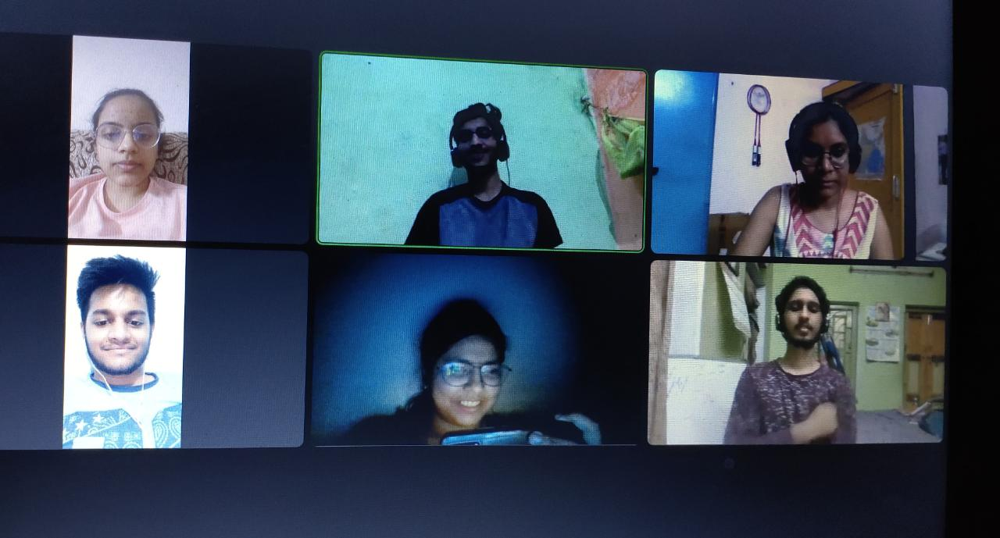
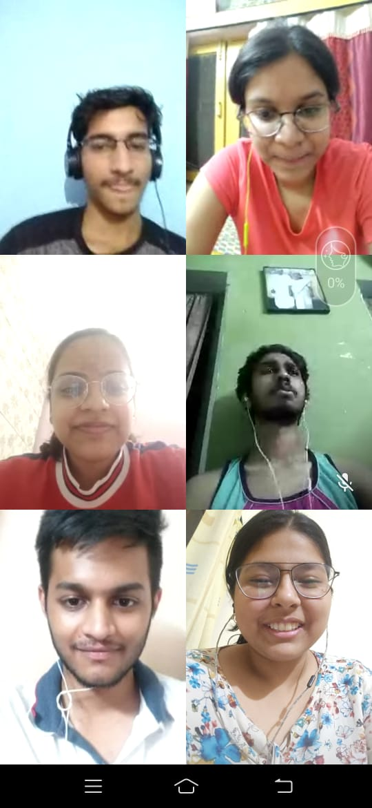
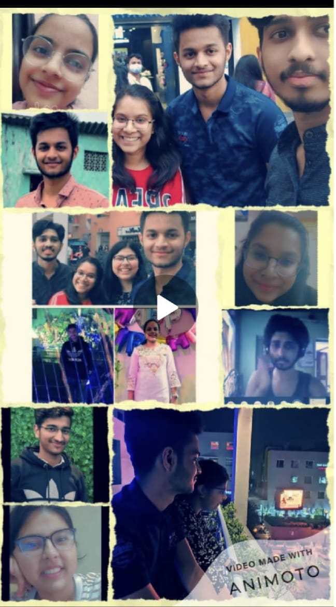

It all started before bharat Darshan. I feel the best event for me because I get the best people for me in college. Initially, in the team of 4 girls, hrishita was least known to me. If she didn't participate in bd I swear I never gonno know she exists.😶 no insta nothing. The best thing I get to know was she was from Kolkata so she said when u come we will meet. Then suddenly my plan to come there formed and 💣 we met finally. The best college memory I have right now was that day. And from there our bond becomes strong. Moving to good people this group was formed to cheat xd. No one knows how this will transform into one of the best Whatsapp groups of my chats. Started with 5 members we become 6. We talked too much here...had fun, sad, cold war, college kab khulega talks, and this made our bond stronger and eventually you guys become special for me. Moving to gurlllls and what so names....our personal talk group which protyush never gonna know what happens there🙈👻 is also a major part of our bonding. We share many things and helped each other and get to know each other. At last, I would say....... Love u good people who r actually good.💕 Are ruko ruko.... Mera dialog - BE HAPPY AND KEEP SMILIN.😌😊 @ROHIT u might be happy after this.😒
  